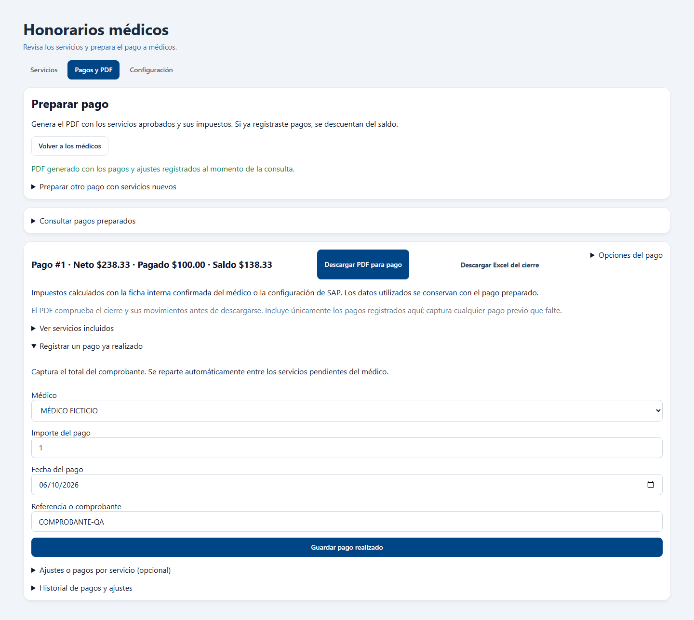

Honorarios médicos: revisión funcional
6 de octubre de 2026. Se probó el código del proyecto y se comprobaron las conexiones reales mediante lecturas.
Resultado: 126 pruebas unitarias, ocho recorridos de navegador y dos integraciones con PostgreSQL aprobados. No quedaron fallos detectados en los escenarios ejecutados. Compilación actualizada.
Fallo encontrado y corregido
Al solicitar el historial fiscal y cambiar de médico antes de recibirlo, la respuesta anterior podía aparecer en la ficha del médico nuevo. Se reprodujo el fallo antes de corregirlo. Ahora se descartan respuestas de una selección anterior, incluidas sus notificaciones de error.
La prueba de regresión simula una respuesta tardía y confirma que el historial del médico anterior no aparece. Se actualizaron también dos recorridos que aún buscaban tablas y controles sustituidos por las tarjetas y la navegación actuales.
Escenarios comprobados
| Área | Comprobación | Resultado |
|---|
| Catálogo y tarifas | Incluir/excluir, función del médico, fecha final, edición, motivos retirados, vigencias inclusivas, tarifas superpuestas e historial. | Aprobado |
| Errores de captura y conexión | Fecha final anterior, guardado fallido sin perder captura, reintento y doble clic sin duplicar la tarifa. | Aprobado |
| Búsqueda y vistas | Filtros combinados, tres vistas, folios distintos, resultados vacíos y paginación con 12,796 registros. | Aprobado |
| Revisión clínica | Aprobación individual y conjunta, selección de dos entre 50, cancelación, IVA explícito, exclusión y conflictos entre revisores. | Aprobado |
| Datos fiscales | Ficha interna, SAP completo/incompleto/no disponible, vigencia, conservación de cambios e historial al cambiar de médico. | Aprobado |
| Pagos y cierres | Cierre conservado, impuestos, pagos parciales, ajustes, saldos, comprobantes duplicados y rechazo de sobrepagos. | Aprobado |
| PDF y Excel | Descargas reales, solo servicios del filtro/médico, folios separados y saldo actualizado; bloqueo cuando el cierre necesita revisión. | Aprobado |
| Pantallas pequeñas | Sin desbordamiento horizontal en los escenarios probados a 320, 390 y 768 píxeles. | Aprobado |
Recorrido con pantalla, API y base de datos reales de prueba
El recorrido nuevo usa los componentes, las rutas y los servicios reales con un esquema PostgreSQL temporal. Solo las fuentes clínicas y SAP se sustituyen por datos ficticios.
Una tarifa de $250 con IVA de $40, ISR de $25 y retención de IVA de $26.67 produce un neto de $238.33. Después de registrar $100, tanto la pantalla como el PDF muestran un saldo de $138.33. Un comprobante repetido se rechaza.

Comprobación de conexiones reales
PostgreSQL, Vertical y SAP respondieron. Para el periodo del 5 al 6 de octubre, Vertical devolvió 328 candidatos; cinco resultaron habilitados para revisión y 322 tenían el catálogo pendiente de configurar. PostgreSQL contenía 2,960 conceptos y una tarifa activa. El directorio de SAP devolvió 687 proveedores y 12 médicos con configuración suficiente para las comprobaciones fiscales del directorio.
Los servicios pendientes y las fichas fiscales incompletas necesitan configuración del responsable. Una referencia de precio no autoriza por sí sola un pago. La conexión real se comprobó mediante lecturas: las aprobaciones, cierres, pagos y ajustes de los recorridos se realizaron con datos ficticios en esquemas temporales.
Evidencia y alcance
Esta revisión describe los escenarios ejecutados sobre el proyecto. No certifica ausencia absoluta de defectos ni confirma que un servidor remoto ya tenga instalada esta compilación.